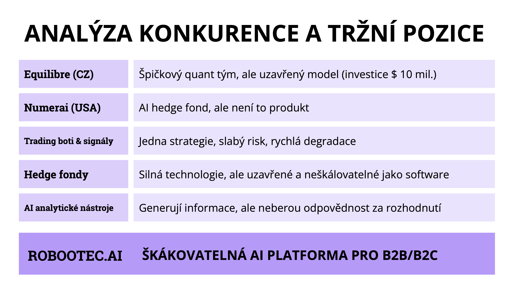

Na trhu existují různé přístupy k využití umělé inteligence v tradingu.
Quant týmy a hedge fondy mají velmi silné technologie, ale jsou uzavřené a nepřístupné běžným investorům.
Platformy jako Numerai využívají AI modely, ale nejde o plnohodnotné investiční produkty.
Mnoho trading botů používá pouze jednu strategii a jejich výkonnost se často rychle vyčerpá.
ROBOOTEC jde jinou cestou.
Budujeme škálovatelnou AI platformu, která kombinuje více strategií, AI analýzu trhu a autonomní řízení portfolia.